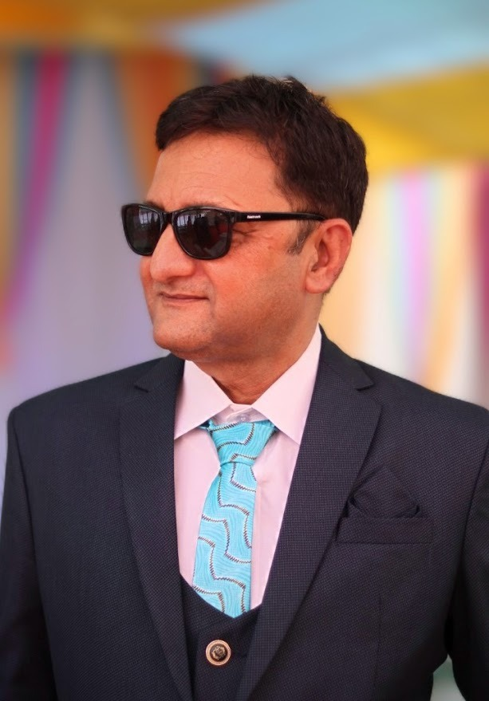

<!DOCTYPE html>

<html lang="en">
<head>
<meta charset="utf-8"/>
<meta content="width=device-width,initial-scale=1" name="viewport"/>
<title>About Kutch | MyKutch.org</title>
<meta content="Discover the real Kutch beyond the Rann—coasts, hills, wildlife, crafts, and villages. Learn why MyKutch.org exists and how we preserve local stories." name="description"/>
<!-- SEO Meta Tags -->
<meta content="Kutch, Kutch tourism, Gujarat, Kutch travel, visit Kutch, Kutch India" name="keywords"/>
<meta content="MyKutch.org" name="author"/>
<meta content="index, follow" name="robots"/>
<link href="https://mykutch.org/about.html" rel="canonical"/>
<!-- Open Graph / Facebook -->
<meta content="website" property="og:type"/>
<meta content="https://mykutch.org/about.html" property="og:url"/>
<meta content="About Kutch | MyKutch.org" property="og:title"/>
<meta content="Kutch is more than the Rann. Explore coasts, hills, wildlife, villages, and the stories that shape the region." property="og:description"/>
<meta content="https://mykutch.org/assets/images/logo.png" property="og:image"/>
<meta content="MyKutch.org" property="og:site_name"/>
<!-- Twitter -->
<meta content="summary_large_image" name="twitter:card"/>
<meta content="https://mykutch.org/about.html" name="twitter:url"/>
<meta content="About Kutch | MyKutch.org" name="twitter:title"/>
<meta content="Kutch is more than the Rann. Explore coasts, hills, wildlife, villages, and the stories that shape the region." name="twitter:description"/>
<meta content="https://mykutch.org/assets/images/logo.png" name="twitter:image"/>
<script type="application/ld+json">
{
	"@context": "https://schema.org",
	"@type": "WebPage",
	"name": "About Kutch",
	"url": "https://mykutch.org/about.html",
	"description": "Discover the real Kutch beyond the Rann—coasts, hills, wildlife, crafts, and villages. Learn why MyKutch.org exists and how we preserve local stories.",
	"inLanguage": "en"
}
</script>
<script type="application/ld+json">
{
	"@context": "https://schema.org",
	"@type": "BreadcrumbList",
	"itemListElement": [
		{
			"@type": "ListItem",
			"position": 1,
			"name": "Home",
			"item": "https://mykutch.org/"
		},
		{
			"@type": "ListItem",
			"position": 2,
			"name": "About",
			"item": "https://mykutch.org/about.html"
		}
	]
}
</script>
<link href="https://fonts.googleapis.com" rel="preconnect"/>
<link crossorigin="" href="https://fonts.gstatic.com" rel="preconnect"/>
<link href="https://fonts.googleapis.com/css2?family=Inter:wght@300;400;500;600;700&amp;family=Poppins:wght@400;500;600;700&amp;display=swap" rel="stylesheet"/>
<link href="css/style.css" rel="stylesheet"/>
<style>
	.about-hero {
		background-image: url('assets/images/hero-about.webp') !important;
		background-size: cover;
		background-position: center;
		min-height: 72vh;
		display: flex;
		align-items: center;
		color: #f8fafc;
	}

	.about-page .about-hero::after,
	.about-page .hero::after {
		content: none;
	}

	.about-hero .hero-content {
		max-width: 720px;
		padding: 2.5rem;
		background: rgba(15, 23, 42, 0.45);
		border-radius: 1.25rem;
		backdrop-filter: blur(8px);
	}

	.about-hero h1 {
		font-size: clamp(2.4rem, 4vw, 3.4rem);
		margin-bottom: 1rem;
	}

	.about-hero p {
		font-size: 1.05rem;
		line-height: 1.75;
		color: #f1f5f9;
	}

	.about-hero-title {
		font-size: 2.5rem;
		font-weight: 800;
		letter-spacing: 0.1em;
		text-transform: uppercase;
		margin-bottom: 0.75rem;
	}

	/* Removed specific heading styles to allow global metallic effect */

	.about-section {
		padding: 3.5rem 0;
	}

	.about-section h2 {
		margin-bottom: 1rem;
	}

	.kutch-highlights {
		display: grid;
		grid-template-columns: repeat(auto-fit, minmax(240px, 1fr));
		gap: 1.5rem;
		margin-top: 2rem;
	}

	.highlight-card {
		background: linear-gradient(135deg, #fff7ed 0%, #ffedd5 100%);
		border-radius: 1rem;
		padding: 1.6rem;
		box-shadow: 0 12px 30px rgba(15, 23, 42, 0.08);
		border: 1px solid rgba(148, 163, 184, 0.2);
	}

	.highlight-card h3 {
		margin-top: 0;
		font-size: 1.2rem;
		display: flex;
		align-items: center;
		gap: 0.6rem;
	}

	.highlight-icon {
		font-size: 1.35rem;
		display: inline-flex;
		align-items: center;
		justify-content: center;
	}

	.highlight-desert {
		background: linear-gradient(135deg, #fef9c3 0%, #fde68a 100%);
	}

	/* Removed .highlight-desert h3 override */

	.highlight-coast {
		background: linear-gradient(135deg, #e0f2fe 0%, #bae6fd 100%);
	}

	/* Removed .highlight-coast h3 override */

	.highlight-hills {
		background: linear-gradient(135deg, #dcfce7 0%, #bbf7d0 100%);
	}

	/* Removed .highlight-hills h3 override */

	.highlight-wildlife {
		background: linear-gradient(135deg, #fee2e2 0%, #fecdd3 100%);
	}

	/* Removed .highlight-wildlife h3 override */

	.highlight-culture {
		background: linear-gradient(135deg, #ede9fe 0%, #ddd6fe 100%);
	}

	/* Removed .highlight-culture h3 override */

	.highlight-card p {
		color: #475569;
		line-height: 1.7;
	}

	.mission-panel {
		background: linear-gradient(135deg, #fef3c7, #fff7ed);
		border-radius: 1.25rem;
		padding: 2.5rem;
		border: 1px solid rgba(251, 191, 36, 0.25);
		box-shadow: 0 20px 40px rgba(148, 163, 184, 0.12);
	}

	.mission-panel p {
		color: #3f3f46;
		line-height: 1.8;
	}

	.team-card {
		background: #fff;
		border-radius: 1.25rem;
		padding: 2rem;
		display: grid;
		grid-template-columns: auto 1fr;
		gap: 1.5rem;
		align-items: center;
		box-shadow: 0 12px 30px rgba(15, 23, 42, 0.08);
		border: 1px solid rgba(148, 163, 184, 0.2);
	}

	.team-card img {
		height: 90px;
		width: auto;
	}

	.closing-note {
		text-align: center;
		font-size: 1.1rem;
		color: #334155;
		margin-top: 3rem;
		font-style: italic;
	}

	@media (max-width: 768px) {
		.about-hero {
			min-height: 60vh;
		}

		.about-hero .hero-content {
			padding: 2rem;
		}

		.team-card {
			grid-template-columns: 1fr;
			text-align: center;
		}

		.about-hero-title {
			font-size: 2rem;
			letter-spacing: 0.06em;
		}
	}
</style>
</head>
<body class="about-page">
<!-- Dark Mode Toggle -->
<button aria-label="Toggle dark mode" class="dark-mode-toggle" id="darkModeToggle">
<span id="darkModeIcon">🌙</span>
</button>
<nav aria-label="Main navigation" role="navigation">
<div class="container nav-content">
<a aria-label="MyKutch Home" class="logo" href="index.html"></a>
<button aria-label="Toggle navigation menu" class="mobile-toggle">☰</button>
<div class="nav-links">
<a data-i18n="nav.home" href="index.html">Home</a>
<a data-i18n="nav.destinations" href="destinations.html">Destinations</a>
<a data-i18n="nav.hidden_gems" href="hidden-gems.html">Hidden-Gems</a>
<a data-i18n="nav.blog" href="blog.html">Blog</a>
<a data-i18n="nav.history" href="history.html">History</a>
<a data-i18n="nav.geography" href="geography.html">Geography</a>
<a data-i18n="nav.crafts" href="crafts.html">Crafts</a>
<a data-i18n="nav.distance_matrix" href="distance-matrix.html">Distance Matrix</a>
<a data-i18n="nav.landscapes" href="landscapes.html">Landscapes</a>
<a data-i18n="nav.bookings" href="bookings.html">Bookings</a>
<a data-i18n="nav.about" href="about.html">About</a>
</div>
</div>
</nav>
<header aria-label="Kutch coastline and landscapes" class="hero about-hero"></header>
<main class="container" role="main" style="max-width: 1100px; padding: 0 1.5rem;">
<section class="about-section" style="padding-top: 2.5rem;">
<h1 class="about-hero-title">Kutch is more than the Rann.</h1>
<p style="color: #475569; line-height: 1.8; max-width: 820px;">
The Great Rann is one chapter of a much larger story. Beyond it lie seashores, fishing harbors, rugged hills,
quiet villages, craft traditions, and wetlands where flamingos arrive with the winter. This page is written
from within Kutch, for those who want to understand it with depth and respect.
</p>
</section>
<section class="about-section">
<h2 class="">What makes Kutch unique</h2>
<p style="color: #475569; line-height: 1.8; max-width: 820px;">
Kutch is a living mosaic of landscapes and communities. The desert is iconic, but it is only one texture in a
region shaped by coastlines, hills, wildlife corridors, and generations of craftsmanship.
</p>
<div class="kutch-highlights">
<div class="highlight-card highlight-desert">
<h3><span class="highlight-icon">🏜️</span>Desert &amp; The Rann</h3>
<p>
The Great Rann is vast and luminous, yet it is just one part of Kutch. Its salt flats frame a larger world of
villages, grasslands, and seasonal wetlands.
</p>
</div>
<div class="highlight-card highlight-coast">
<h3><span class="highlight-icon">🌊</span>Coast &amp; Sea</h3>
<p>
From Mandvi to Jakhau, coastal life shapes food, trade, and daily rhythm. Harbors, beaches, and fishing
communities bring Kutch to the edge of the Arabian Sea.
</p>
</div>
<div class="highlight-card highlight-hills">
<h3><span class="highlight-icon">⛰️</span>Hills &amp; Landscapes</h3>
<p>
The Kalo Dungar range, rocky plateaus, and dry riverbeds create a dramatic inland terrain. These landscapes
carry stories of migration, resilience, and changing seasons.
</p>
</div>
<div class="highlight-card highlight-wildlife">
<h3><span class="highlight-icon">🦩</span>Wildlife &amp; Flamingos</h3>
<p>
Migratory birds turn the wetlands pink each winter. From flamingos to wild ass sanctuaries, Kutch shelters
rare ecosystems and fragile habitats.
</p>
</div>
<div class="highlight-card highlight-culture">
<h3><span class="highlight-icon">🧵</span>Culture &amp; Hidden Gems</h3>
<p>
Embroidery, leather work, bandhani, and pottery thrive in artisan villages. Temples, stepwells, and quiet
hamlets reveal a slower, deeper Kutch beyond the headlines.
</p>
</div>
</div>
</section>
<section class="about-section">
<div class="mission-panel">
<h2 class="">Why MyKutch.org exists</h2>
<p>
MyKutch.org is a curated platform built for the love of Kutch. Every page is written with care to preserve
regional stories, highlight the people behind the places, and help travelers explore beyond the mainstream.
We aim to represent the real spirit of Kutchits communities, landscapes, crafts, food, and everyday life.
</p>
</div>
</section>
<section class="about-section">
<h2 class="">Team &amp; Contact</h2>
<div class="team-card">

<div>
<h3 style="margin: 0; font-size: 1.35rem;">Niraj Rachh</h3>
<p style="margin: 0.35rem 0 0.75rem; color: #64748b;">Founder &amp; Local Kutchhi</p>
<div style="display: flex; flex-wrap: wrap; gap: 1rem; color: #475569; font-weight: 500;">
<span>Phone: <a href="tel:9825034580" style="color: inherit; text-decoration: none;">9825034580</a></span>
<span>Email: <a href="mailto:info@mykutch.org" style="color: inherit; text-decoration: none;">info@mykutch.org</a></span>
</div>
</div>
</div>
</section>
<p class="closing-note">
Explore Kutch with curiosity and respect,listen to its people, walk its landscapes slowly, and let the region
reveal itself beyond the obvious.
</p>
</main>
<footer class="footer-main" role="contentinfo"></footer>
<script src="js/script.js"></script>
<script src="js/i18n.js"></script>
</body>
</html>